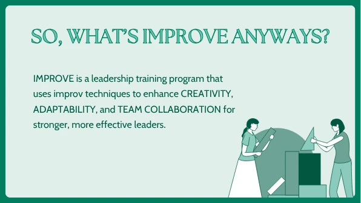
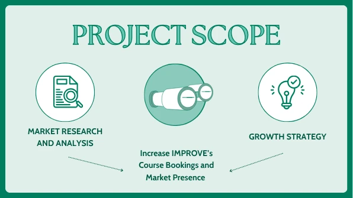
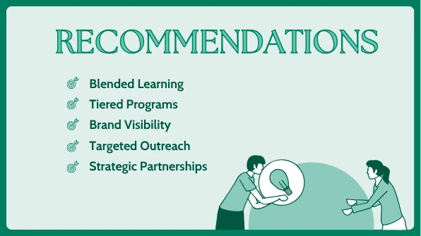
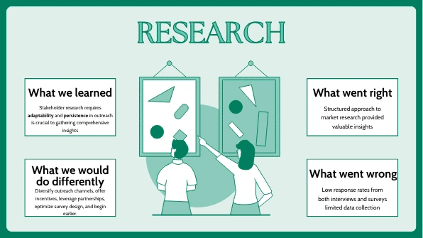
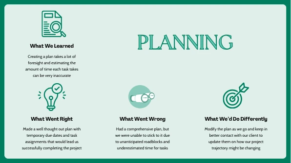
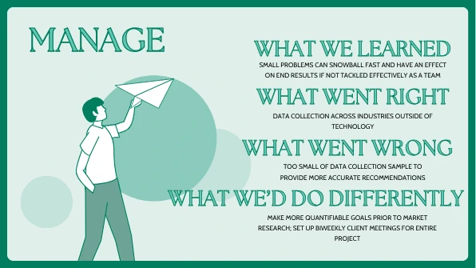
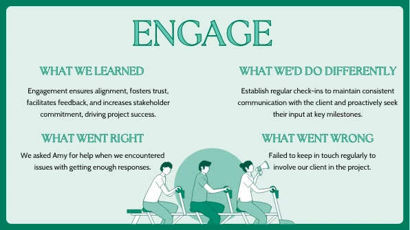

Corporate buyers
Organizations considering leadership training and professional-development services.
IMPROVE, a leadership-development firm, wanted to increase bookings and strengthen its position in a crowded market. Our team first had to define what “growth” meant — which buyers, which channels, what differentiation, and which offers — before recommending tactics.
4 min read · Original project artifacts

IMPROVE is a leadership-development firm whose work emphasizes creativity, adaptability, and collaboration. In our January–May 2025 engagement, the company wanted to increase bookings and strengthen its position in a crowded market for professional learning and leadership training.
Our four-person graduate consulting team examined the growth question across several connected areas: who buys leadership development, what they value, how competing offers are positioned, and what would make IMPROVE’s services easier to discover and choose.
I worked with Christy Choi, Amrita Thirumalai, and Qiwen Yan on the research and final growth recommendations. My contribution involved framing the business problem, investigating the market and buyer evidence, synthesizing findings, and communicating the recommendations.
The work also required project coordination and stakeholder communication. We needed to move from broad research to a coherent client presentation, with a clear explanation of what the findings meant for service design, positioning, outreach, pricing, and future learning.
“Increase bookings” describes a desired business outcome, but it does not explain where the problem lies. Low visibility, unclear differentiation, an unsuitable offer, pricing, or weak follow-up could each call for a different response.
The challenge was to avoid jumping directly to a list of marketing tactics. We needed a research-backed view of the buyer and the competitive landscape before recommending how the firm should present and grow its services.
Organizations considering leadership training and professional-development services.
People whose learning needs and experience would influence the value of the offer.
Decision-makers weighing positioning, service formats, outreach, and growth opportunities.
We broke the broad business goal into questions about buyers, differentiation, delivery formats, acquisition channels, and offers. That framing made the research more purposeful: information needed to help the client choose a direction.
It also connected the business problem with the final presentation structure. The team could explain the recommendation areas as parts of one growth strategy rather than a disconnected collection of ideas.
The research combined competitor and market analysis with stakeholder information and survey evidence. We looked across leadership-training firms, online-learning platforms, and university executive-education programs.
The synthesis identified recurring priorities around communication, adaptability, soft skills, experiential learning, and measurable leadership outcomes. Those themes helped us assess which offer characteristics could be relevant to the client’s prospective buyers.
Our recommendations considered blended learning, tiered offerings, clearer brand communication, prospecting tools, partnerships, and complimentary workshops. We also considered pricing incentives and feedback systems.
These options addressed different points in the buyer journey. A workshop could help someone experience the approach; clearer tiers could help a buyer understand the offer; and feedback could help the company learn what was working after delivery.
The team synthesized the work into an executive-facing presentation connecting the market evidence to practical choices. We needed to explain not only what the firm could do, but which part of the growth problem each recommendation addressed.
The project reflections documented lessons about research, planning, ambiguity, and stakeholder engagement. Those were part of the delivery: a strong recommendation depends on how well the team understands the client’s situation and communicates the path forward.
The recommendations worked together across the buyer journey rather than relying on one acquisition tactic.
| What mattered | The response | Why it mattered |
|---|---|---|
| Buyers needed to understand the distinctive value of the training. | Strengthen positioning around the capabilities and experience the offer developed. | Make the service easier to compare with alternatives. |
| Different customers could need different levels of support. | Consider tiered offers and blended delivery options. | Give buyers clearer ways to find a suitable format. |
| A prospective buyer might need to experience the approach before committing. | Consider complimentary workshops and partnerships. | Create opportunities to demonstrate value. |
| Growth decisions needed continued evidence after the engagement. | Build feedback into the service and outreach process. | Support learning beyond the initial recommendation set. |
The original team presentation includes the client context, project scope, recommendation areas, and reflections on research and project delivery.







The engagement delivered a growth plan grounded in competitor research and buyer feedback. It connected the firm’s positioning, service formats, pricing options, prospecting, partnerships, and feedback into a more coherent set of choices.
The outcome was a research-backed consulting strategy that the client could use to evaluate next steps. The supplied materials do not contain post-implementation booking or revenue measurements, so this case study focuses on the recommendations delivered and the reasoning behind them.
The project reinforced that research becomes valuable when it changes a decision. Collecting a large amount of information was only an intermediate step; the more difficult work was making the implications specific enough for the client to use.
I would carry forward the habit of clarifying the decision before choosing the method. It helps a consulting team stay focused and makes the eventual recommendation easier for a stakeholder to evaluate.
{kind=link}
{kind=link}
{kind=link}
{kind=link}
{kind=link}
{kind=link}
{kind=link}